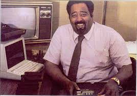
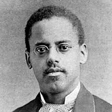
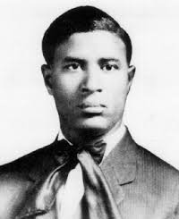

Showcasing the Technological Advancements of Blacks.
Why did I make this page
As an African-American, you don't learn a lot about your people in the field of technology
in school. It is usually people like Thomas Jefferson, Steve Jobs, Bill Gates, people who
are not like you. So, I created this page to give the black community some unfimiliar faces
that will encourage them to go into technology and change the world.
Gerald Lawson

Gerald Lawson was a huge influence in video gaming. He was involved in the creation of the
Channel F video game console, which is the first console to use interchangable catridges. This
method transcended the gaming industry by allowing for a larger variety of video games.
Lewis Latimer

Lewis Latimer was a major player in technology innovations in the home. The former draftsman for telephone creator
Alexander Graham Bell, Latimer made Carbon filaments in light bulbs. This made for more affordable sources for light
which made for a lasting impact in modern-day homes.
Garrett Morgan

Garrett Morgan's invention may have been the most needed invention for all in a large city with automobiles.
With the creation of the 3 position travel signal, it allowed for an ordinal process to when cars can go, slow down,
and eventually stop. This, of course, is the precursor to the stoplight.